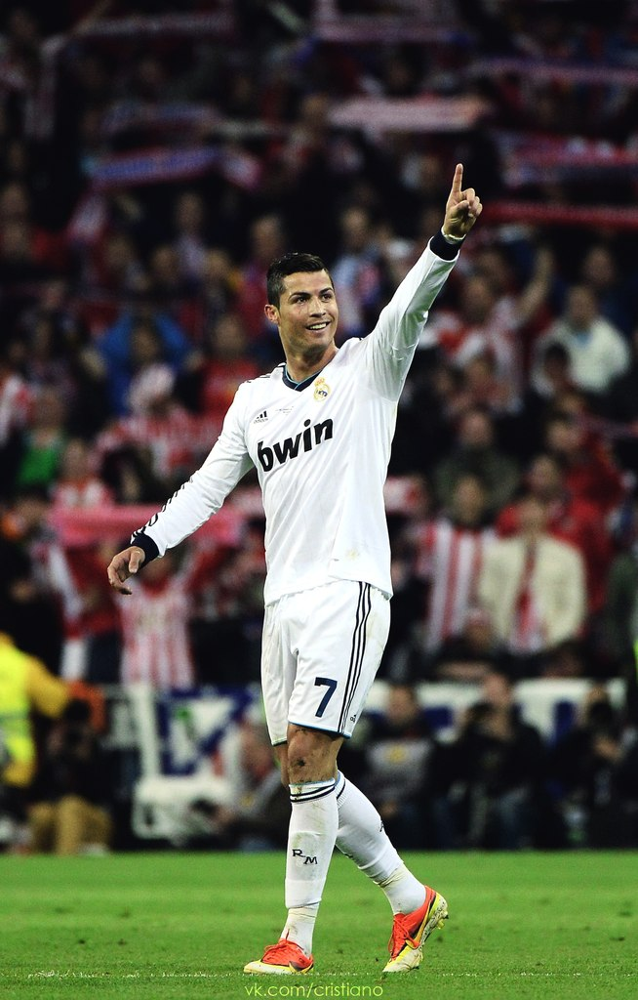

Cristianu Ronaldu
Криштиа́ну Рона́лду душ Са́нтуш Аве́йру (порт. Cristiano Ronaldo dos Santos Aveiro; род. 5 февраля 1985, Фуншал) — португальский футболист, выступающий за испанский клуб «Реал Мадрид» и сборную Португалии, в составе которой стал чемпионом Европы 2016 года. Являлся самым дорогим футболистом в истории футбола до 2013 года — за его переход из английского «Манчестер Юнайтед» в «Реал» было заплачено 80 млн фунтов стерлингов. Лучший бомбардир в истории сборной Португалии, а также рекордсмен по количеству сыгранных за неё матчей. Считается одним из лучших футболистов 2000-х — 2010-х годов. Официально признан ПФФ лучшим игроком в истории португальского футбола.
Роналду был признан лучшим молодым игроком чемпионата Европы 2004 года. Чемпион английской Премьер-лиги сезонов 2006/07 (лучший игрок и лучший молодой игрок сезона), 2007/08 (лучший игрок сезона) и 2008/09. В сезоне 2006/07 дошёл с «Манчестер Юнайтед» до полуфинала Лиги чемпионов, а в следующем сезоне выиграл в финале у лондонского «Челси». Обладатель «Золотой бутсы» 2008, 2011, 2014 и 2015 годов. В 2008 году был признан лучшим футболистом года в клубном европейском футболе по версии УЕФА и лучшим игроком Лиги чемпионов, получил «Золотой мяч» как лучший футболист Европы и награду «Игрок года ФИФА» как лучший футболист мира. В январе 2015 года стал обладателем своего третьего «Золотого мяча», как лучший футболист мира в 2014 году.
